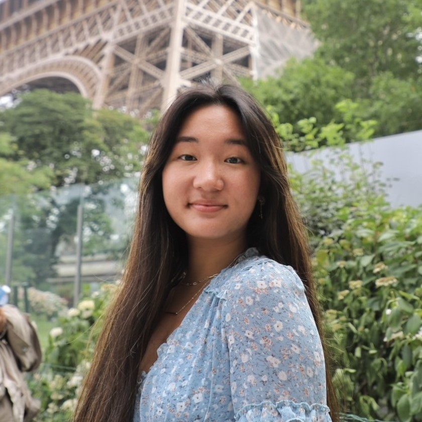
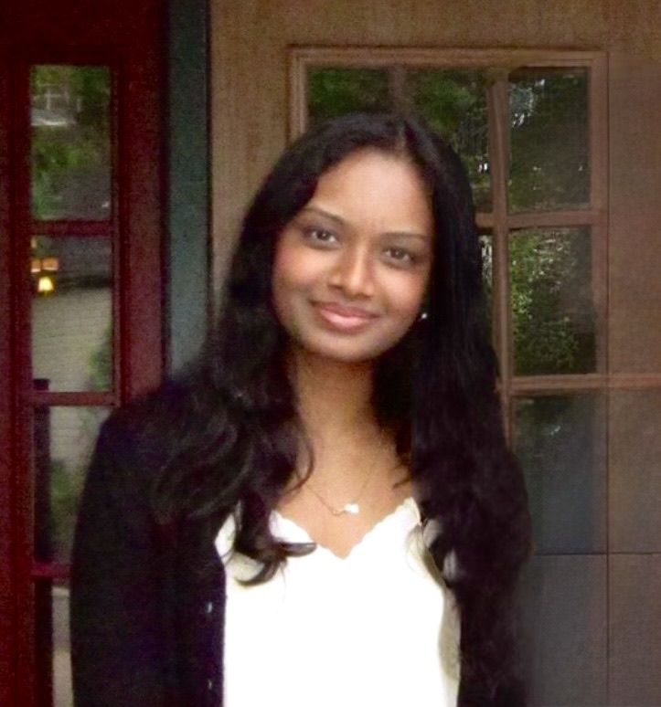
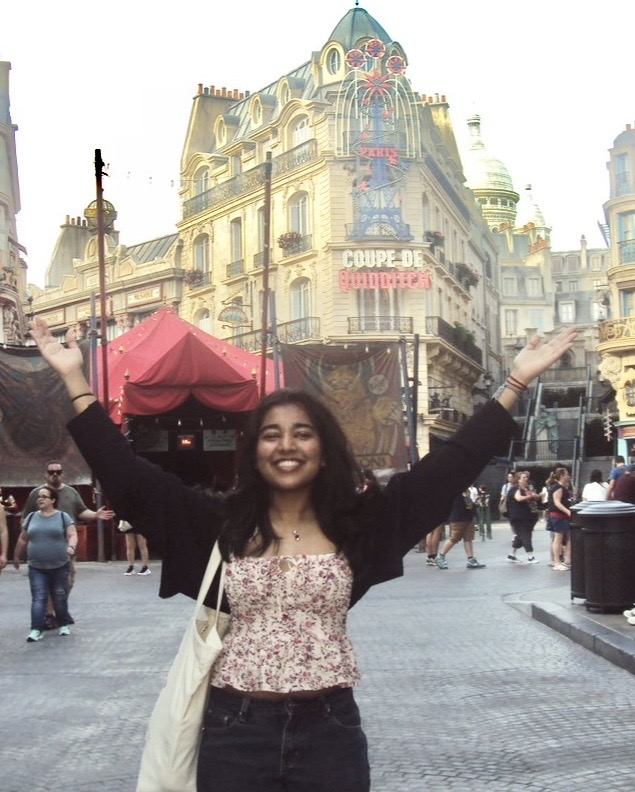
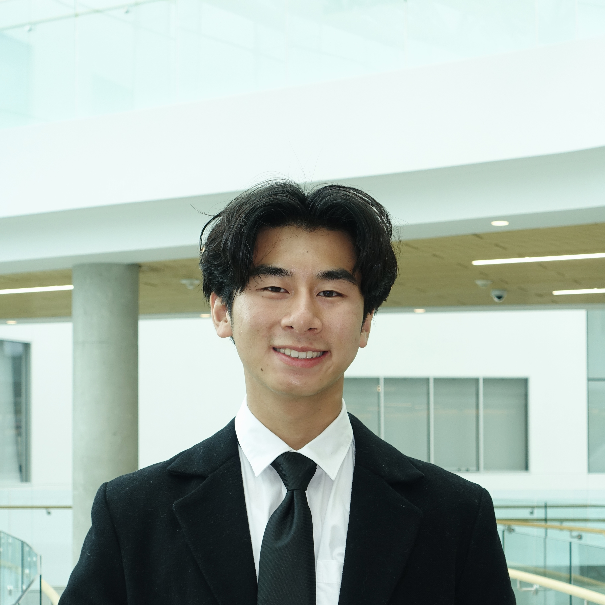
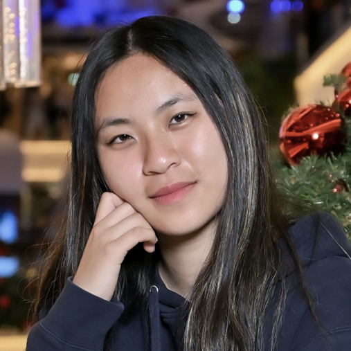
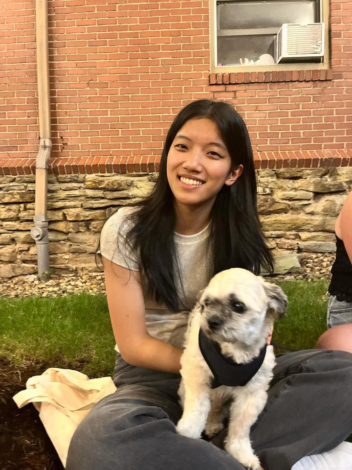
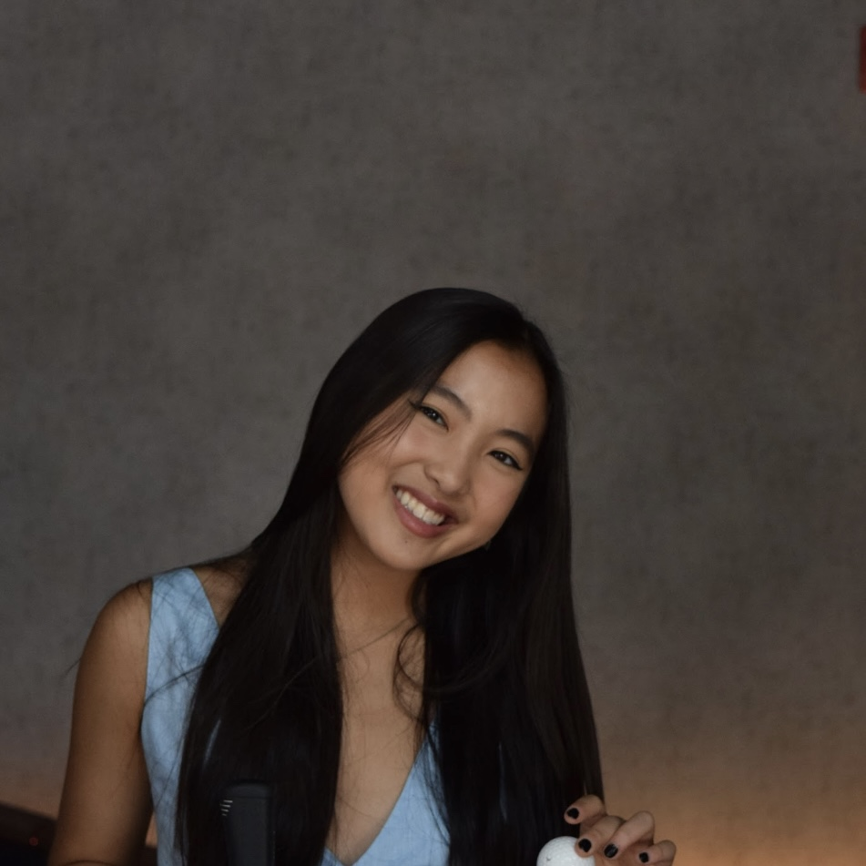

Our Team

Tiffany is from Dublin, Ohio, and loves to explore new places, play volleyball, and meet new people.

Nia is a junior from Pittsburgh, Pennsylvania studying Biological Sciences and Computer Science. In her free time, she enjoys photography, watching movies with her friends, and going to the gym.

Anoushka is from Accra, Ghana. In her free time, she likes watching movies, roller blading, and trying out new foods!

Kelvin is a sophomore in Mechanical Engineering from Poughkeepsie, New York. He's usually working on systems for Carnegie Mellon Racing, hanging out with friends, or getting Berry Fresh.

Jenny is a freshman from Boulder, Colorado. In her free time, she enjoys playing volleyball, reading, and crocheting. She also likes to play the piano and eat lots of yummy food!

Jocelyn is a freshman in Electrical and Computer Engineering.

Sophia is a freshman from Palo Alto, California studying Electrical and Computer Engineering. In her free time, she loves to play flute, take walks, and go on food runs. Generally, you can find her sleeping, working, or at Berry Fresh!

Natalie is a sophomore from New Jersey. She loves to read, bake, cook, and go bouldering!

Ivy is a freshman from Indianna studying Chemistry and Art in the BXA program. In her free time she enjoys reading, watching movies, going to the gym, and baking!

Emily is a sophomore studying Mechanical Engineering from Toledo, Ohio. On a daily basis, you can usually find her making a new playlist or lifting at the gym! In her free time, she enjoys painting, reading, and baking.